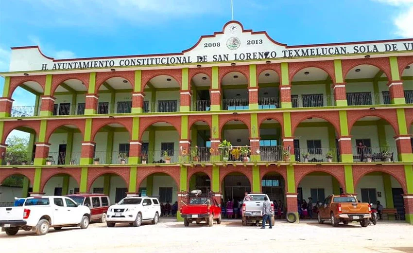
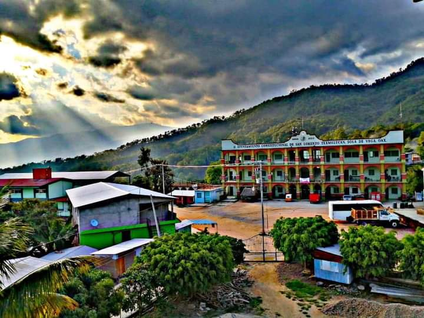
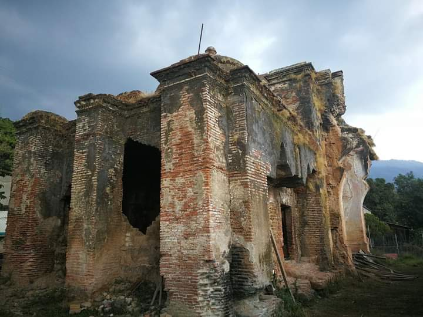
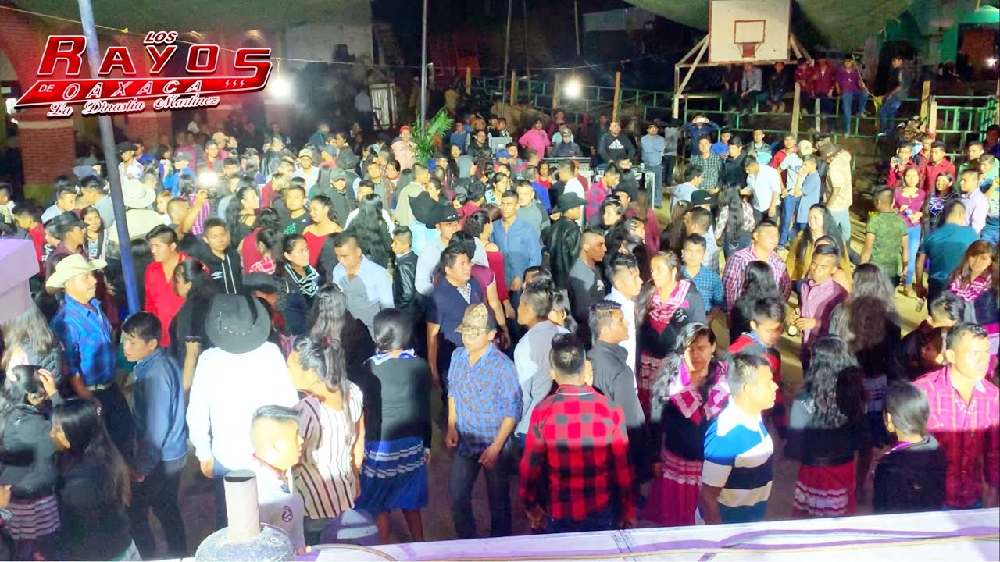
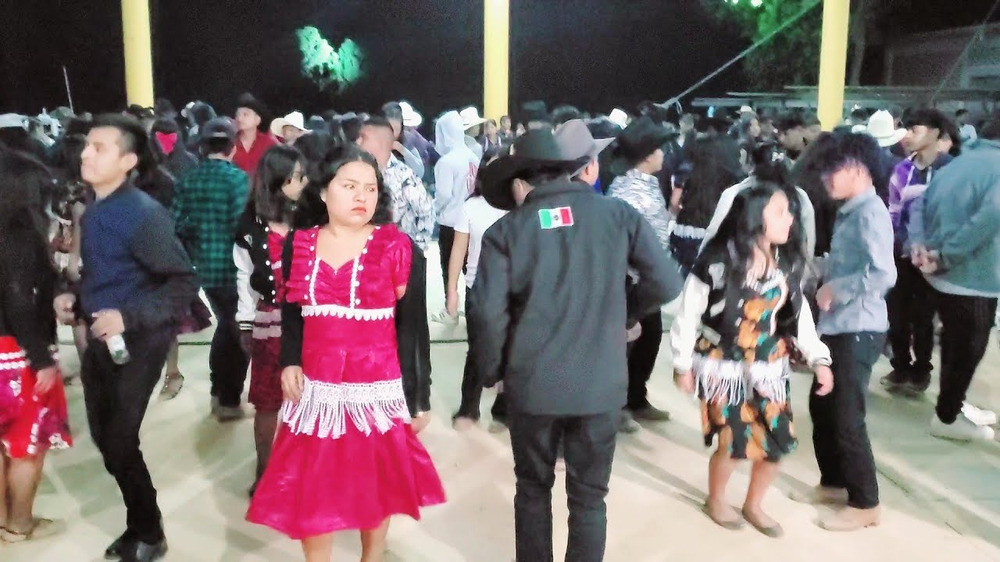
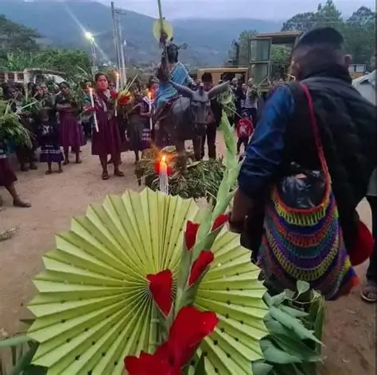
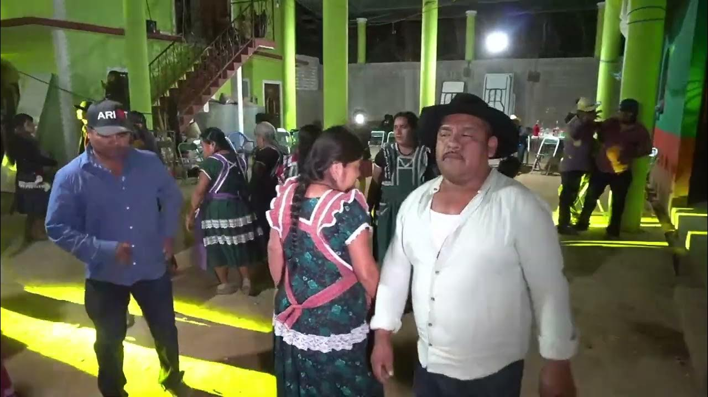

|
San Lorenzo Texmelucan es una comunidad con una gran riqueza cultural
donde aún se conservan costumbres y tradiciones transmitidas
de generación en generación.
Entre sus principales tradiciones destacan las fiestas patronales en honor a San Lorenzo Mártir, las celebraciones religiosas, las procesiones, la música tradicional y las actividades culturales realizadas por la comunidad. También son importantes las reuniones familiares y comunitarias, donde las personas conviven compartiendo comida típica, danzas y costumbres tradicionales. |
 |


En esta página se presentará información sobre las principales costumbres y tradiciones de San Lorenzo Texmelucan, como sus fiestas patronales, celebraciones religiosas y actividades culturales.
El Día de Muertos es una de las tradiciones más importantes de San Lorenzo Texmelucan y se vive con mucho respeto y alegría. La celebración comienza desde el 31 de octubre, cuando las familias limpian sus casas y preparan los altares para recibir a las almas de sus seres queridos. Las mujeres acostumbran matar pollos y preparar el mole, tamales, chocolate y otros platillos típicos que se colocarán como ofrenda. Los hombres ayudan a decorar el altar con flores de cempasúchil, velas, pan, frutas, incienso y fotografías de los difuntos.
El 1 de noviembre, los ahijados visitan a sus madrinas y padrinos para llevarles pan, chocolate, velas o algunos regalos, fortaleciendo los lazos de compadrazgo. Por la tarde y durante toda la noche, grupos de personas recorren las calles visitando las casas donde hay altar para recoger ofrendas, mientras gritan "¡Cuya, cuya!", una costumbre muy antigua de la comunidad. Entre música, rezos y convivencia, la tradición continúa hasta la madrugada del 2 de noviembre, cuando muchas familias también visitan el panteón para recordar a sus difuntos.
|
|
|
Las celebraciones navideñas comienzan con las posadas, del 16 al 24 de diciembre. Cada noche se realiza una peregrinación que representa el camino de José y María buscando alojamiento. La imagen va pasando de una casa a otra, donde los anfitriones reciben a los participantes con alegría y les ofrecen tamales, atole, ponche, café, dulces, fruta y piñatas para los niños.
El 24 de diciembre las familias asisten a la misa de Nochebuena y después se reúnen para compartir la cena, intercambiar buenos deseos y convivir con familiares y amigos. Muchas casas colocan nacimientos y adornos navideños, mientras que los niños esperan con ilusión la llegada de la Navidad. Es una fecha que fortalece la unión familiar y las tradiciones religiosas de la comunidad.
Las posadas representan el recorrido de María y José, y son celebradas con cantos, piñatas y convivencia familiar.

|

|
La fiesta patronal se celebra cada 10 de agosto en honor a San Lorenzo Mártir, patrono del pueblo. Es una de las festividades más grandes del municipio y reúne a habitantes que viven dentro y fuera de la comunidad.
El 9 de agosto, conocido como la víspera, se realizan las tradicionales mañanitas, quema de fuegos artificiales, música de banda, procesiones y actividades religiosas. El 10 de agosto se celebra la misa principal, seguida por recorridos con la imagen del santo, convivencia entre las familias y diferentes actividades culturales.
Durante los días 11, 12 y 13 de agosto continúan las celebraciones con jaripeos, bailes populares, presentaciones musicales, venta de antojitos y juegos mecánicos, creando un ambiente de fiesta que atrae a visitantes de comunidades cercanas.

|

|
Los jaripeos y bailes forman parte de las costumbres más esperadas por la población. Generalmente se organizan durante la fiesta patronal o en algunas mayordomías importantes. En los jaripeos participan jinetes que montan toros mientras el público disfruta del espectáculo.
Por las noches se realizan bailes populares con bandas, grupos musicales o sonideros, donde jóvenes y adultos conviven hasta altas horas de la madrugada. Estos eventos ayudan a fortalecer la convivencia y mantienen vivas las tradiciones del pueblo.
|
 |
 |
Las mayordomías son una tradición religiosa y cultural muy importante en San Lorenzo Texmelucan. A lo largo del año se celebran diferentes santos, y las familias que aceptan ser mayordomos tienen la responsabilidad de organizar la festividad.
Los mayordomos preparan la iglesia, ofrecen comida a los asistentes, organizan misas, procesiones, música, danzas y, en algunas ocasiones, bailes o jaripeos. Muchas personas colaboran llevando flores, velas o alimentos, demostrando solidaridad y trabajo comunitario.
Esta tradición fortalece la unión entre las familias, conserva las costumbres heredadas por los antepasados y mantiene viva la identidad cultural de San Lorenzo Texmelucan.
|
 |
 |